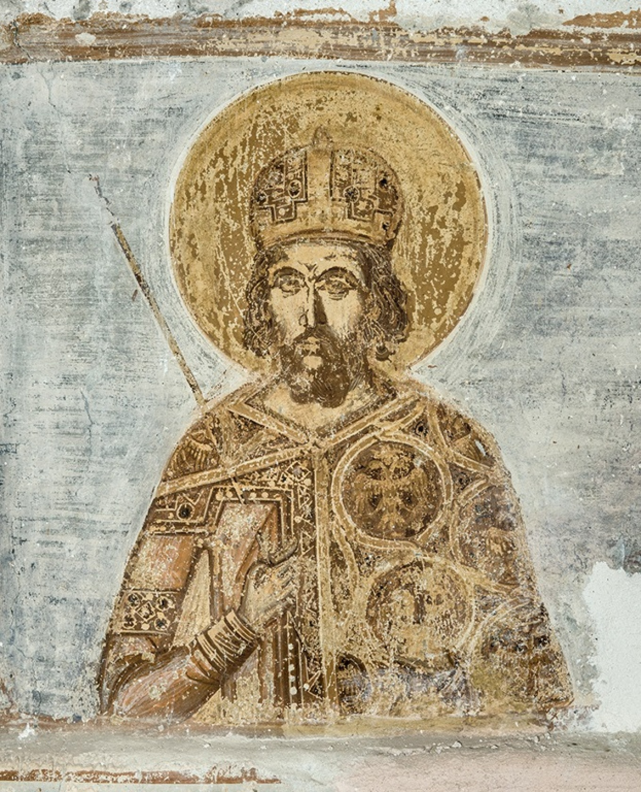

Константин XI Палеолог рођен је 1405. године и био је последњи цар Ромејског царства. На престо је ступио 1449. године у време када је царство обухватало само Цариград и мале остатке некадашњих области.
Суочен са огромном османском војском султана Мехмеда II, Константин је одбио предају и организовао одбрану града 1453. године. Његова смрт током пада Цариграда постала је симбол храбрости и верности царству.
Последњи наследник римске царске традиције која је трајала више од хиљаду година.
Предводио је браниоце током опсаде 1453. године против османске војске.
Његов лик постао је симбол жртве, части и краја Ромејског царства.
Константин XI постаје цар Ромејског царства у Мистри, а затим долази у Цариград да преузме власт.
Нови османски султан почиње припреме за освајање Цариграда, последњег великог центра Ромеја.
Османска војска окружује град са огромним бројем војника и моћним топовима, док браниоци припремају одбрану цариградских зидина.
После дуге опсаде град пада под османску власт. Константин XI гине бранећи град и царство.
Константин XI постаје симбол краја Ромејског царства и трајног сећања на последње дане Цариграда.
Константин је одбио предају и остао са својим народом до последњег тренутка одбране града.
Пад Цариграда 1453. године означио је крај Средњовековног Римског царства.
Био је последњи владар династије Палеолога која је владала царством више од једног века.
Његово име остало је повезано са храброшћу, жртвом и очувањем ромејског идентитета.
Константин XI Палеолог остао је упамћен као последњи цар Ромејског царства и један од најпознатијих владара у историји Цариграда. Његова одлука да брани град до краја постала је симбол части и оданости.
Падом Цариграда 29. маја 1453. године завршена је више од хиљаду година дуга историја Римског царства на Истоку. Ипак, ромејско наслеђе наставило је да живи кроз културу, право, уметност и традицију.

Владар који је последњи носио титулу римског цара у Цариграду.